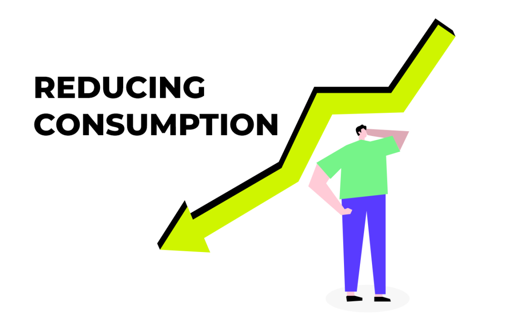
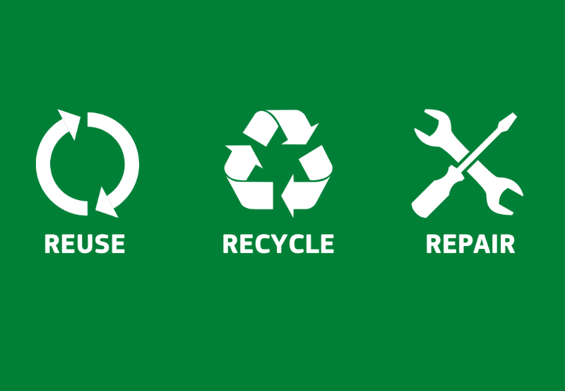
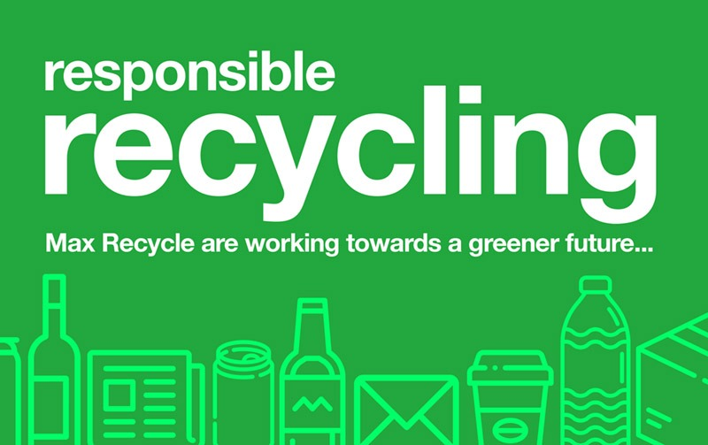
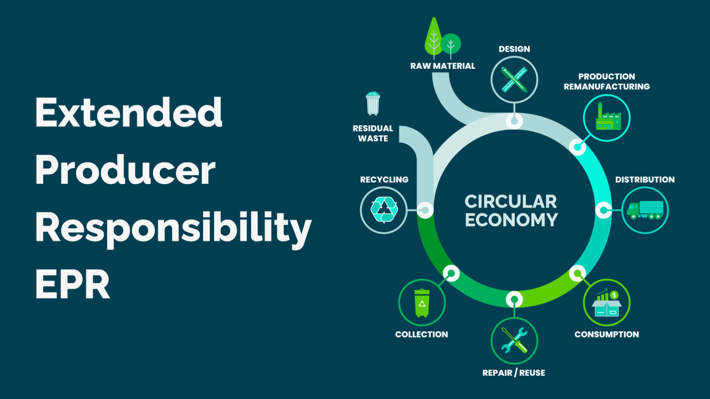
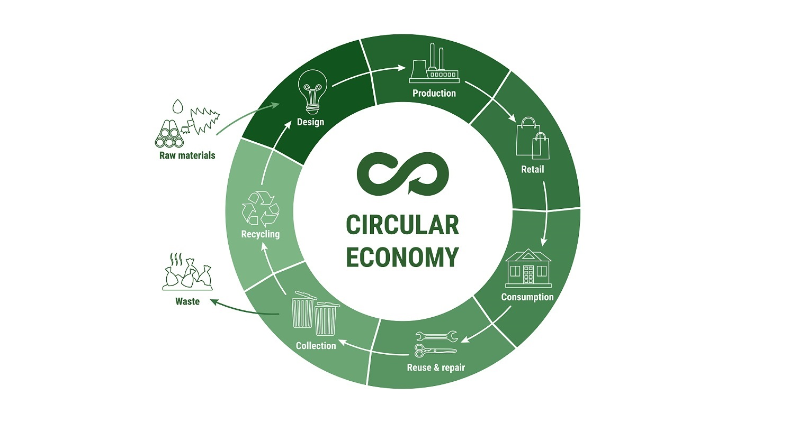

What Can We Do?
There are many ways to tackle the e-waste problem. Here are some of the most effective solutions, recommended by experts and organizations worldwide:

Reduce Consumption
Buy only what you need and choose durable, repairable electronics. Avoid upgrading devices too often and support brands that design products to last.

Repair and Reuse
Before throwing away a device, see if it can be repaired or given a second life. Many communities offer repair cafés or workshops, and donating working electronics helps others and reduces waste.

Recycle Responsibly
Take old electronics to certified e-waste recycling centers. Proper recycling recovers valuable materials and prevents pollution from hazardous substances.
Innovation and Policy

Eco-Design
Manufacturers are increasingly designing products that are easier to repair, upgrade, and recycle. The European Union's "Right to Repair" initiative is an example of policies that encourage sustainable design.

Producer Responsibility
Extended Producer Responsibility (EPR) laws require companies to take back and recycle their products at end-of-life, helping close the loop and reduce waste.

Circular Economy Initiatives
Supporting a circular economy means keeping products and materials in use for as long as possible. This includes sharing, refurbishing, and remanufacturing electronics.